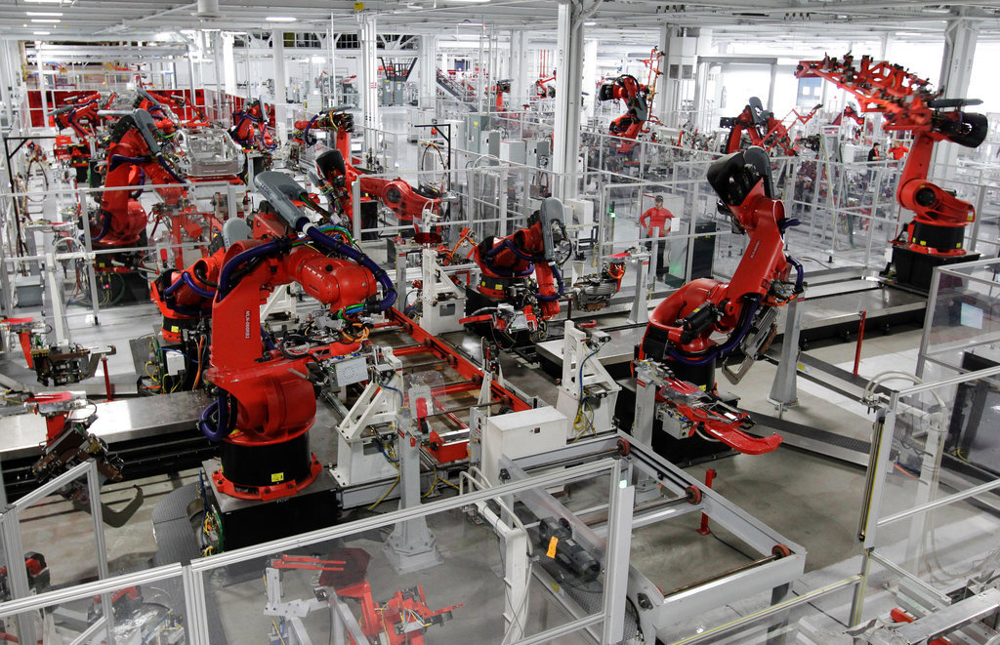
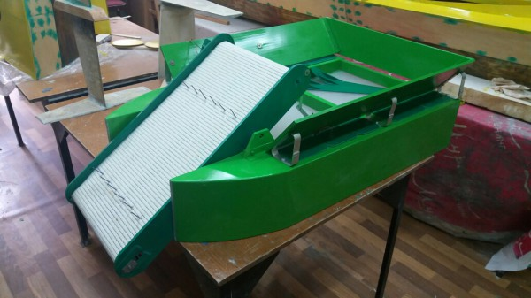
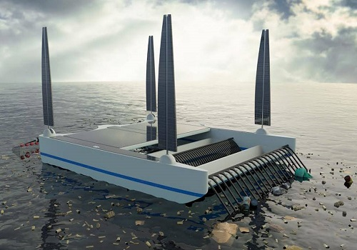
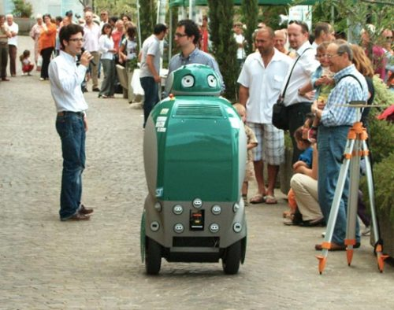

Робот собирает мусор и переробатывает мусор
Ежегодно в мире создается 2 млрд тонн мусора. В России одна семья за год выкидывает больше 250 кг, в результате чего его накоплено
на 38 млрд тонн. По площади — это 4 млн гектаров или одна Швейцария. Конечно, мусор не находится в одном месте, а распределен по тысячам свалок, в том числе и незаконным. Самые массовые скопления мусора — свалки в Гуанчжоу и Гонконге по сотне гектаров, свалка электронных устройств Guiyu в Китае на 5,2 тысячи гектаров или Большое мусорное пятно в океане на 80 тысяч тонн.
Мусор на полигонах горит, вызывая проблемы с легкими и глазами или онкологию у жителей окрестностей. Мусор разлагается, попадает в почву, в растения и грунтовые воды и моря. Рыбы в море едят пластик, который откладывается в их тканях и попадает к нам на стол. Даже если мусор далеко, он нас касается.
Проблема мусора глобальна. С ней уже не поможет полубог — его место заняли роботы. Возможно, они смогут справиться с миллиардами тонн отходов, потому что у людей пока не получается. Давайте разберемся, как роботы находят, собирают мусор, контролируют источники загрязнения и помогают людям.
Роботы — причина и решение
Мы уже писали о том, как роботы помогают в продажах и маркетинге: встречают гостей в ресторанах, отелях, играют в спектаклях и работают промоутерами. Уже давно они заняли место людей на производстве. Уничтожать мусор они тоже способны, но, что интересно, к проблеме этого самого мусора они имеют прямое отношение.
Массовая роботизация началась с 50–60-х годов прошлого века, когда были внедрены промышленные роботы на производство различных товаров: от машин до косметики. Сначала роботы выполняли простые операции, вроде печатей штампов, потом сложнее: резка, сварка и установка деталей. Сейчас уже работают полностью автоматизированные заводы, на которых роботизирован весь цикл задач производства.

Робот не устает, не просит повышения, отпускных и не бастует, а эффективность на порядок выше человеческой. Поэтому с приходом роботов товаров и услуг стало больше. Больше товаров — больше затрат ресурсов. Больше затрат ресурсов и товаров — больше мусора. Роботизация удешевляет производство, создает больше добавочного продукта и разгоняет экономику. Если растет производство, растут и отходы этого производства.
Производство на заводе Tesla. Фото: Paul Sakuma/Associated Press
Однако окружающая среда ускориться не может. Она не справляется с текущим мусором, что же говорить про будущий? В природе просто нет механизмов, бактерий или животных, которые могли бы переработать железо, стекло или нефтепродукты. Несколько лет назад были открыты бактерии, которые разлагают некоторые виды пластика, но очень медленно — 1 миллиметр за 30 недель. Бактериям понадобятся тысячи лет, чтобы справиться с текущим объемом пластика, даже если закрыть все заводы по производству нового.
Роботы — одна из причин проблем с мусором, но они же могут нам помочь: собирать, сортировать, утилизировать и перерабатывать мусор.
Цикл мусора
Давайте рассмотрим жизненный цикл мусора, в какую часть цепи роботы могут встроиться и что именно могут делать.
Не считая производства, жизнь отходов делится на этапы:
Сбор
Сортировка
Переработка
Утилизация
Сейчас все это делают люди. Мы собираем мусор в пакеты и выносим в баки. В некоторых странах, таких как Швеция, Финляндия или Швейцария, жители законодательно обязаны дополнительно сортировать мусор на стекло, пластик, органику и другие виды. После того, как мусор попал в бак, его забирает мусоровоз и отвозит в центр распределения, потом на свалку или на мусороперерабатывающий завод.
Этот первый шаг — забор мусора — можно роботизиро
Сбор и вывоз мусора
Автоматы для приема отходов
Первая ступень роботизации уборки мусора — автоматы для приема отходов. Они уже внедрены и работают в Швеции в супермаркетах, аптеках и автозаправках. Автоматы принимают мелкий бытовой и вредный мусор: лампочки, батарейки, лаки, клеи, краски, баллончики, стеклотару, консервные банки. За принятый мусор автомат выдает вознаграждение.
Так решаются две задачи. Первая — приучить людей финансовой стимуляцией не бросать мусор где попало. Вторая — некоторым образом автоматизировать сбор отходов.
Подобные аппараты в России пока встречается точечно — например, в магазинах здоровой еды «ВкусВилл». В магазинах сети уже почти два года стоят контейнеры для приема батареек. Каждый месяц они собирают почти 10 тонн батареек, а магазин тратит на утилизацию вредных отходов по 700 тысяч рублей. Вознаграждение за сданные батарейки не выдается, но оно и не нужно — все работает на альтруизме. Отдельно работают пандоматы — аппараты для приема пластиковых и алюминиевых бутылок.
Умные мусорные контейнеры

Соседи шведов — голландцы в Гааге — также пошли по этому пути и внедряют «умные» мусорные контейнеры. В контейнерах стоят датчики заполненности. Информация об этом передается в службу вывоза четыре раза в день. ПО в службе анализирует объем мусора и строит график сбора — каждый раз маршрут разный, в зависимости от данных. Сборщики мусора экономят время и деньги, не собирая полупустые баки, не катаясь лишний раз по маршруту и не застаиваясь в пробках. Кроме того, система может планировать маршрут на следующий день, анализируя данные за несколько суток.
Датчики стоят в 1,4 тысячи подземных мусорных контейнерах в Гааге. Производитель — компания Enevo из Финляндии. Она выпускает датчики и ПО для аналитики отходов и работает в 35 странах. Внедрение системы для госслужб и частных компаний показало, что автоматический сбор эффективнее ручного. Компании экономят по 30% от затрат на вывоз мусора с помощью датчиков и ПО. Иногда экономия может достигать 50%.
В России существует аналог — устройство от компании Wasteout. Это прибор, в который встроены датчики: ультразвуковой, температуры, наклона и радиомодуль для передачи данных о заполненности контейнера. Система аналогична Enovo, но замеры производятся иначе, поэтому патент не нарушается. Приборы Wasteout установлены в Москве, Санкт-Петербурге и Калуге. В Перми используются компанией «Буматика», которая управляет полигоном отходов. Устройства настроены на работу в мороз, жару и защищены от вандалов.
Умные мусоровозы
Если наделить «умом» контейнеры с мусором, то почему бы не сделать то же самое с мусоровозами? Кажется, что это логичный шаг? Да, так и есть.
В 2017 году две шведские компании, автогигант Volvo и компания Renovo, которая утилизирует отходы, запустили совместный проект ROAR — Robot-based Autonomous Refuse handling или роботизированный мусоровоз.
Мусоровозом управляет человек, но часть работы автоматизирована. Новые маршруты прокладывает водитель, а машина их запоминает. В следующий раз автомобиль проедет до контейнеров самостоятельно по GPS, с минимальными затратами топлива. Мусоровоз запоминает расположение баков и других препятствий, может двигаться задним ходом и объезжать припаркованные автомобили. В нем установлены датчики, и если он заметит кошку, ребенка или другой движущийся объект на дороге, машина останавливается. Единственное, что делает человек — управляет механизмом, который загружает отходы в кузов.
На год раньше те же мусоровозы оснащались беспилотниками для мониторинга загруженности баков. Но проект не получил развития. Мусоровоз без дронов и так работает эффективно.
Уборка рек и морей
Отдельный вопрос — уборка морей, рек и озер. В воде контролировать мусор тяжелее, чем на суше. Течения относят отходы в самые разные места, мусор скапливается на дне или в толще воды. Если течения нет, то мусор остается у берегов и убирать его
https://youtu.be/ZSL2H9JBWbI
 Италия робот на улице!
Робот, часть $3.9 миллионной исследовательской программы DustBot, собирает мусор и измеряет уровень атмосферных загрязняющих веществ, таких как оксид серы, бензол, озон и оксид азота с помощью своих датчиков. Робота даже можно вызвать по телефону, он способен совершать поквартирный обход, устанавливать личность жильцов по персональному идентификационному номеру, а так же сортировать свой мусор на органический, подлежащий повторному использованию или отходы производства.
Достаточно проворный, чтобы перемещаться там, где традиционные, потребляющие слишком много горючего, автомобили для вывоза мусора, электрический робот DustCart предназначен для очистки улиц от отходов производства. После сортировки мусора DustCart смахивает его в свой живот и отвозит на участок обработки отходов. Во время движения DustCart обходит препятствия благодаря заранее загруженным картам и датчикам.
Робот в форме груши пока только прототип, т.к. время его реакции слишком медленное для работы на оживлённых улицах, и в Печчиоли роботам не позволено бродить по улицам без руководящего участия человека. Но кто знает – возможно, однажды вы увидите дружелюбного зелёного робота, двигающегося вдоль по вашей улице, пытающегося спасти наше положение.
Роботы для очистки океана от мусора
Загрязнение водоемов в начале XXI века приняло критический характер. Даже в океане появляются уже целые мусорные острова, гибнет морская флора и фауна. Робототехника пока что не дала эффективного решения для борьбы с загрязнением, но определенные разработки в этой области известны. В основном это прототипы. Оценить их жизнеспособность вы можете на этой странице. А кого-то она, возможно, вдохновит на собственную разработку робота для очистки океана?
Россия
Экобот, Нижний Новгород

фото: пресс-службы администрации Нижнего Новгородаbr
Малое беспилотное судно - несколько пафосное описание школьного исследовательского проекта "Экобот". Это работа группы школьников 10 класса (Школа 79 им Н.А.Зайцева) из Нижнего Новгорода. Ребята создали свою конструкцию в рамках занятий в "Центре малого судостроения судомоделирования и робототехники" Нижегородского детского речного пароходства.
Идеи, заложенные в робота, вполне практические. Ленточный элеватор позволяет поднимать плавающий мусор с поверхности водоема для его очистки. Элеватор можно заменить на подводную косилку - для очищения от подводной растительности. А косилку - на земснаряд для очистки дна от ила. Небольшие размеры аппарата позволяют ему работать на мелководье.
Зарубеж
Разработка вполне актуальная, многие российские водоемы находятся в удручающем состоянии, никаких роботов на их приведение в порядок не напасешься. Школьный проект "Экобот" в 2017 году вышел в финал всероссийского конкурса "Транспорт будущего", который проводит Московский госуниверситет путей сообщение!
Прошлое системы
Мусоровоз
Настоящее системы
Робот пылесос
Будущее системы
Умный быстрый робот пылесос
Прошлое надсистемы
Уборка мусора
Настоящее надсистемы
Технологичная уборка
Будущее надсистемы
Умная уборка
Прошлое подсистемы
Водитель,машина.
Настоящее подсистемы
Датчик,компьютер.
Будущее подсистемы
Ускорители,датчик
СПАСИБО ЗА ВНИМАНИЕ